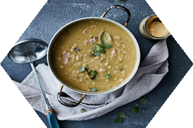
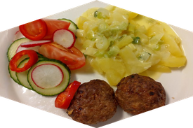
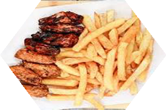

Aamiainen on joka päivä samanlainen, mutta monipuolinen. Tarjolla on leipää, jogurttia, muroja ja puuroa, ja viikonloppuisin aamiaista täydentää kiisseli. Leipään on saatavilla monia erilaisia päällisiä, kuten juustoa, leikkeleitä, vihanneksia ja levitteitä. Puuroa voi maustaa erikseen lisättävillä lisukkeilla, kuten marjoilla, pähkinöillä, siemenillä, hunajalla tai sokerilla. Sunnuntaisin, kun leiri usein lähenee loppuaan, aamiaiseen lisätään erityisiä herkkuja, kuten pieniä pannukakkuja, hilloa tai croissanteja, jotka tekevät päivästä erityisen. Iltapalaksi on tarjolla kevyt mutta ravitseva valikoima, johon kuuluu esimerkiksi voileipiä, hedelmiä, jogurttia, rahkaa tai kevyitä lämpimiä ruokia, kuten keittoa. Sunnuntain iltapalalle voi lisätä pientä luksusta, kuten hedelmäsalaattia, kaakaota tai keksejä.
maanantain ruokaan kuuluugluteenitonta kanaaperunamuussin kanssa
tiistain ruokaan kuuluuHernekeittoa ja kaksi pannukakkuahillon kanssa
keskiviikon ruokaan kuuluukanaa ja riisiä
torstain ruokaan kuuluuLihapullatkerma perunoiden kanssa
perjantain ruokaan kuuluukalafileetperunoiden kanssa
lauantain ruokaan kuuluusiipiä ja ranskanperunat
sunnuntain ruokaan kuuluulasagnesalaatin kanssa